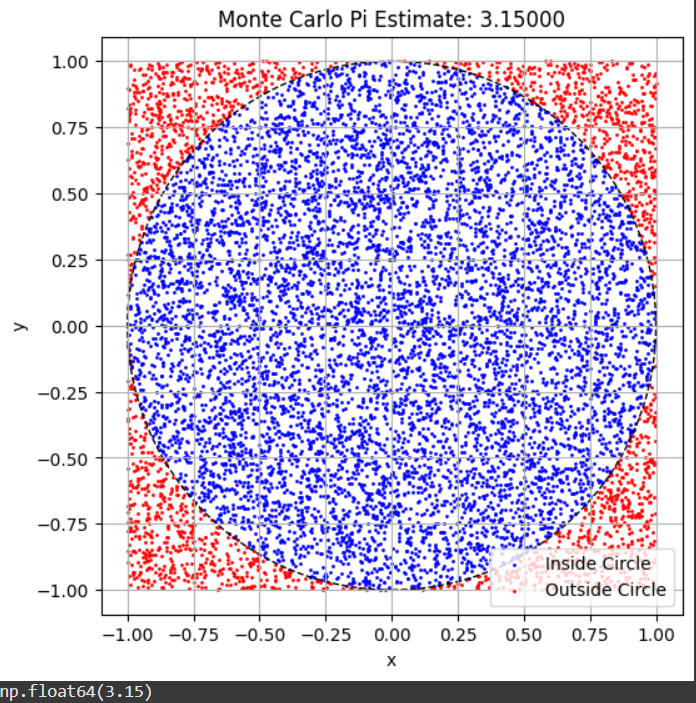
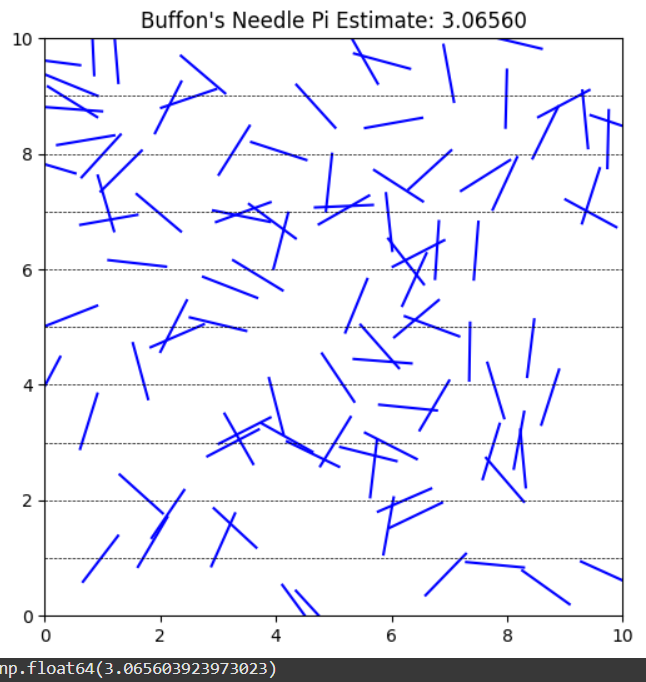

Estimating \(\pi\) Using Monte Carlo Methods
Part 1: Circle-Based Monte Carlo Simulation
1. Theoretical Foundation
The idea is based on comparing the area of a unit circle (radius = 1) with the area of a square that bounds it.
- Area of the unit circle: \(A_{\text{circle}} = \pi r^2 = \pi\)
- Area of the square: \(A_{\text{square}} = (2r)^2 = 4\)
Random points are uniformly distributed in the square. The ratio of points that fall inside the circle to the total number of points approximates the ratio of the areas:
Thus, we can estimate \(\pi\) using:
2. Python Simulation (Circle Method)
import numpy as np
import matplotlib.pyplot as plt
def estimate_pi_circle(n_points):
x = np.random.uniform(-1, 1, n_points)
y = np.random.uniform(-1, 1, n_points)
inside_circle = x**2 + y**2 <= 1
pi_estimate = 4 * np.sum(inside_circle) / n_points
# Visualization
plt.figure(figsize=(6,6))
plt.scatter(x[inside_circle], y[inside_circle], s=1, color='blue', label='Inside Circle')
plt.scatter(x[~inside_circle], y[~inside_circle], s=1, color='red', label='Outside Circle')
circle = plt.Circle((0, 0), 1, fill=False, color='black', linestyle='--')
plt.gca().add_artist(circle)
plt.title(f"Monte Carlo Pi Estimate: {pi_estimate:.5f}")
plt.xlabel("x")
plt.ylabel("y")
plt.axis('equal')
plt.legend()
plt.grid(True)
plt.show()
return pi_estimate
# Example usage
estimate_pi_circle(10000)

Part 2: Buffon's Needle Simulation
1. Theoretical Foundation
Buffon's Needle problem involves dropping a needle of length \(L\) onto a floor with parallel lines spaced distance \(D\) apart. If \(L \leq D\), the probability \(P\) that the needle crosses a line is:
Rearranging gives an estimate for \(\pi\):
Where: - \(N\) = total needle drops - \(C\) = number of crossings
2. Python Simulation (Buffon's Needle)
import numpy as np
import matplotlib.pyplot as plt
def estimate_pi_buffon(n_drops, needle_length=1.0, line_distance=2.0):
assert needle_length <= line_distance, "Needle length must be <= line spacing"
# Randomly generate needle centers and angles
centers = np.random.uniform(0, line_distance / 2, n_drops)
angles = np.random.uniform(0, np.pi / 2, n_drops)
crosses = centers <= (needle_length / 2) * np.sin(angles)
# Estimate pi
n_crosses = np.sum(crosses)
if n_crosses == 0:
return None # Avoid division by zero
pi_estimate = (2 * needle_length * n_drops) / (line_distance * n_crosses)
# Visualization
plt.figure(figsize=(6,6))
for i in range(100):
x0 = np.random.uniform(0, 10)
y0 = np.random.uniform(0, 10)
theta = np.random.uniform(0, 2 * np.pi)
x1 = x0 + (needle_length / 2) * np.cos(theta)
x2 = x0 - (needle_length / 2) * np.cos(theta)
y1 = y0 + (needle_length / 2) * np.sin(theta)
y2 = y0 - (needle_length / 2) * np.sin(theta)
plt.plot([x1, x2], [y1, y2], 'r-' if abs(y1 - y2) > line_distance else 'b-')
for i in range(0, 11):
plt.axhline(i, color='black', linestyle='--', linewidth=0.5)
plt.title(f"Buffon's Needle Pi Estimate: {pi_estimate:.5f}")
plt.xlim(0, 10)
plt.ylim(0, 10)
plt.gca().set_aspect('equal')
plt.show()
return pi_estimate
# Example usage
estimate_pi_buffon(10000)

Part 3: Convergence and Analysis
As the number of iterations (\(N\)) increases, the estimates for \(\pi\) from both methods converge toward the true value. Circle-based estimation usually converges faster and is simpler to implement.
Summary Comparison Table
| Method | Formula Used | Convergence Rate | Visualization Simplicity | Accuracy (for large \(N\)) |
|---|---|---|---|---|
| Circle Method | \(\pi \approx 4 \cdot \frac{\text{inside}}{\text{total}}\) | Fast | High | High |
| Buffon's Needle | \(\pi \approx \frac{2L \cdot N}{D \cdot C}\) | Slow | Moderate | Moderate |